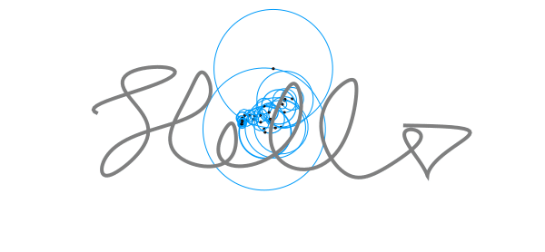
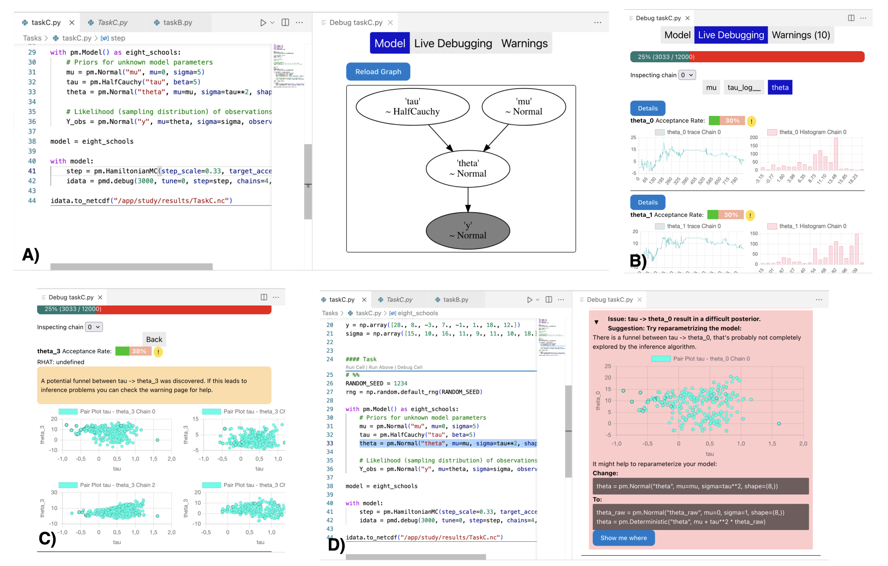
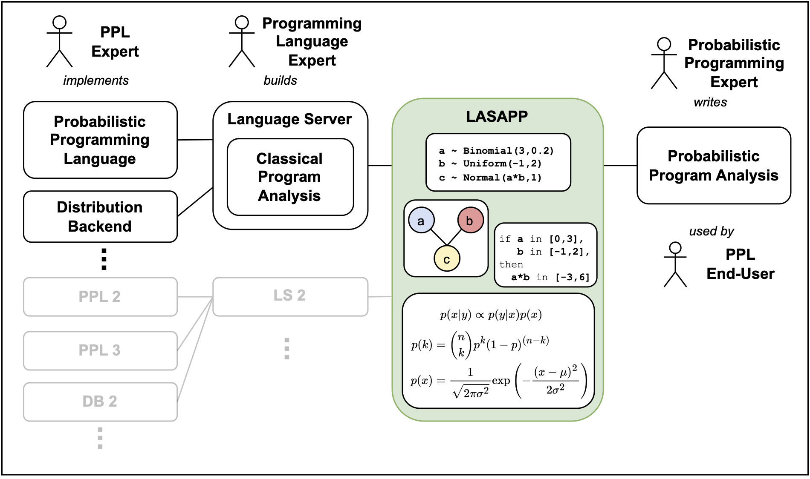
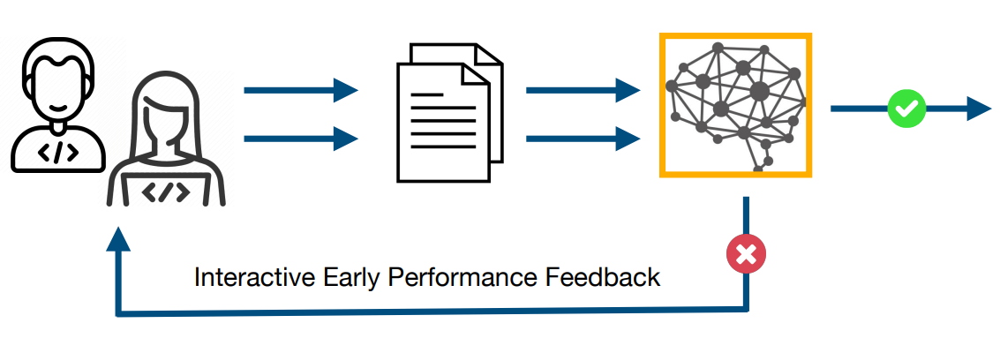
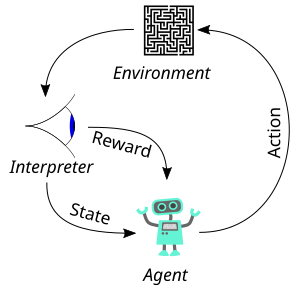
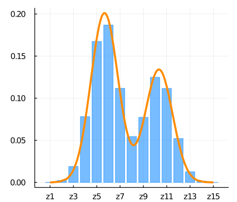
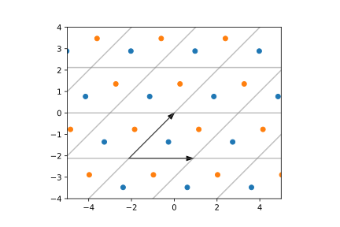
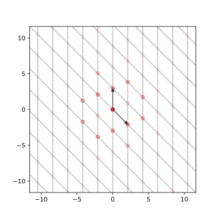
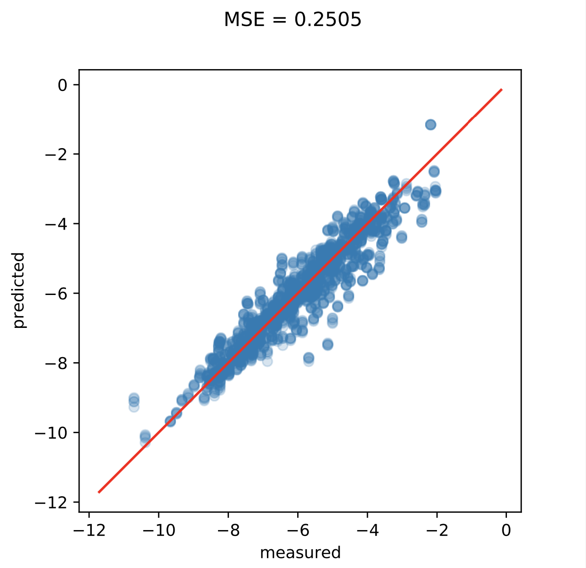
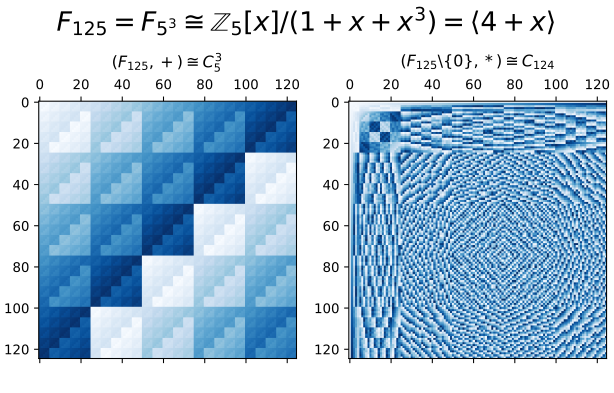

I'm Markus.
About
I am a Computer Science and Mathematics enthusiast from Vienna (Austria). I combine both of my passions by pursuing a PhD on Probabilistic Programming.
PhD Research
Probabilistic programming provides an intuitive means to specify probabilistic models as programs. By enabling automatic Bayesian posterior inference, probabilistic programming systems allow the practitioners to focus on iterative modelling. In my work, I focus on static analysis, compilation, and acceleration of probabilistic programs.
UPIX: Universal Programmable Inference in JAX
Markus Böck, and Jürgen Cito. Work in progress.Universal probabilistic programming languages (PPL) like Pyro or Gen enable the user to specify models with stochastic support. This means that control flow and array shapes are allowed to depend on the values sampled during execution. This is fundamentally incompatible with JIT-compilation in JAX. Thus, probabilistic programming systems built on top of JAX like NumPyro are restricted to models with static support, i.e. they disallow Python control flow. UPIX realises the Divide-Conquer-Combine (DCC) approach as a framework which brings back JIT-compilation for universal PPLs.
Static Factorisation of Probabilistic Programs With User-Labelled Sample Statements and While Loops
Markus Böck, and Jürgen Cito. To appear in OOPSLA 2026.Derives a novel factorisation of the program density from a static analysis that approximates the dependencies between variables. Presents a compilation method based on the factorisation that speeds-up MCMC and SMC algorithms and reduces variance of a gradient estimator in variational inference.
It is commonly known that any Bayesian network can be implemented as a probabilistic program, but the reverse direction is not so clear. In this work, we address the open question to what extent a probabilistic program with user-labelled sample statements and while loops - features found in languages like Gen, Turing, and Pyro - can be represented graphically. To this end, we extend existing operational semantics to support these language features. By translating a program to its control-flow graph, we define a sound static analysis that approximates the dependency structure of the random variables in the program. As a result, we obtain a static factorisation of the implicitly defined program density, which is equivalent to the known Bayesian network factorisation for programs without loops and constant labels, but constitutes a novel graphical representation for programs that define an unbounded number of random variables via loops or dynamic labels. We further develop a sound program slicing technique to leverage this structure to statically enable three well-known optimisations for the considered program class: we reduce the variance of gradient estimates in variational inference and we speed up both single-site Metropolis Hastings and sequential Monte Carlo. These optimisations are proven correct and empirically shown to match or outperform existing techniques.
@misc{boeck2025staticfactorisation,
title={Static Factorisation of Probabilistic Programs With User-Labelled Sample Statements and While Loops},
author={Markus Böck and Jürgen Cito},
year={2025},
eprint={2508.20922},
archivePrefix={arXiv},
primaryClass={cs.PL},
url={https://arxiv.org/abs/2508.20922},
}
Online and Interactive Bayesian Inference Debugging
Nathanel Nussbaumer, Markus Böck, and Jürgen Cito. To appear in ICSE 2026.Introduces a new approach for debugging probabilistic programs, where diagnostic tools evaluate the quality of inference during execution. We implemented a debugger as a VSCode extension and showed that our approach significantly reduces time and difficulty on inference debugging tasks in a user-study.

Probabilistic programming is a rapidly developing programming paradigm which enables the formulation of Bayesian models as programs and the automation of posterior inference. It facilitates the development of models and conducting Bayesian inference, which makes these techniques available to practitioners from multiple fields. Nevertheless, probabilistic programming is notoriously difficult as identifying and repairing issues with inference requires a lot of time and deep knowledge. Through this work, we introduce a novel approach to debugging Bayesian inference that reduces time and required knowledge significantly. We discuss several requirements a Bayesian inference debugging framework has to fulfill, and propose a new tool that meets these key requirements directly within the development environment. We evaluate our results in a study with 18 experienced participants and show that our approach to online and interactive debugging of Bayesian inference significantly reduces time and difficulty on inference debugging tasks.
@misc{nussbaumer2025onlineinteractivebayesianinference,
title={Online and Interactive Bayesian Inference Debugging},
author={Nathanael Nussbaumer and Markus Böck and Jürgen Cito},
year={2025},
eprint={2510.26579},
archivePrefix={arXiv},
primaryClass={cs.SE},
url={https://arxiv.org/abs/2510.26579},
}
Language-Agnostic Static Analysis of Probabilistic Programs
Markus Böck, Michael Schröder, and Jürgen Cito. ASE 2024.Describes a framework which allows the formulation of program analyses which target problems specific to the probabilistic programming environment in a high-level API. The analyses can be applied to any probabilistic programming language for which light-weight bindings are implemented.

Probabilistic programming allows developers to focus on the modeling aspect in the Bayesian workflow by abstracting away the posterior inference machinery. In practice, however, programming errors specific to the probabilistic environment are hard to fix without deep knowledge of the underlying systems. Like in classical software engineering, static program analysis methods could be employed to catch many of these errors. In this work, we present the first framework to formulate static analyses for probabilistic programs in a language-agnostic manner: LASAPP. While prior work focused on specific languages, all analyses written with our framework can be readily applied to new languages by adding easy-to-implement API bindings. Our prototype supports five popular probabilistic programming languages out-of-the-box. We demonstrate the effectiveness and expressiveness of the LASAPP framework by presenting four provably-correct language-agnostic probabilistic program analyses that address problems discussed in the literature and evaluate them on over 200 real-world programs.
@inproceedings{boeck2024language-agnostic,
title={Language-Agnostic Static Analysis of Probabilistic Programs},
author={B{\"o}ck, Markus and Schr{\"o}der, Michael and Cito, J{\"u}rgen},
booktitle={Proceedings of the 39th IEEE/ACM International Conference on Automated Software Engineering},
pages={78--90},
year={2024}
}
Master's Thesis
The goal of my Master's thesis was to build a Machine Learning model for the prediction of performance regressions in software projects. Using the openly available data of Mozilla's Firefox project, a novel labeling approach was found to intercept potential faulty commits before the would go to production.

Bachelor's Thesis
My Bachelor's thesis is about a particular approach to reinforcement learning, where the return is modelled directly by categorical distributions rather than only its expected value. I derived the sample complexity of tabular algorithms and considered the incorporation of risk measures in the action selection process. Results published in SIMODS.


Other Projects
Strongly Solving Connect4
I generated the first win-draw-loss look-up table for 7x6 Connect4. This was achieved by symbolic search with binary decision diagrams.
TinyPPL: Educational implementation of a probabilistic programming language in Julia
To better understand the inner workings of PPLs and inference algorithms, I implement them from scratch without too many abstractions.
Predicting Chemical Properties with 3D Convolutional Neural Network
Describe a crystal molecule through Fourier transform in reciprocal space and predict enthalpy per atom.



Chess Engine
Programming a fast chess simulator and using MTD(f) as search algorithm.
Final engine includes a small opening book and self generated 3-men endgame tablebase.
It is on par with chess.com engines up to level 20 which they consider to be advanced to expert level strength.
Game as white vs chess.com computer level 16.
MNIST from Scratch
Implementation of automatic differentiation library and testing with deep neural network on MNIST dataset in JULIA.
Goomo
The Goomo robot was product of a student project during my internship at iteratec. A Segway vehicle with Android smartphone on top allowed us to creatively try to write autonomous driving software.
Finite Field Generator
Ridiculously slow calculation of addition and multiplication table of any finite field
based on modular integer polynomial arithmetic.
Produces fancy pictures.

Personal Website
I created a website.